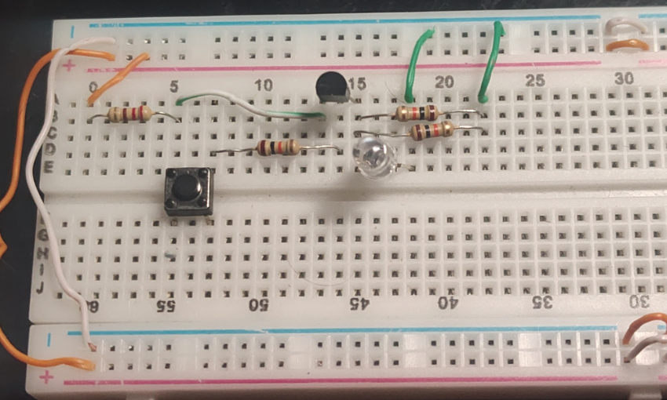
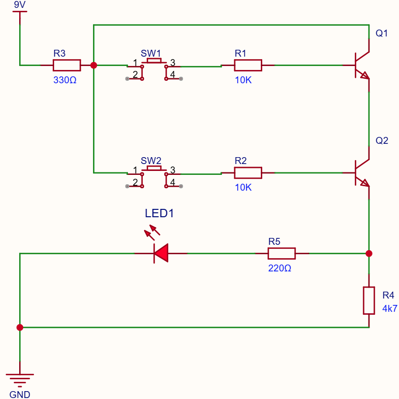
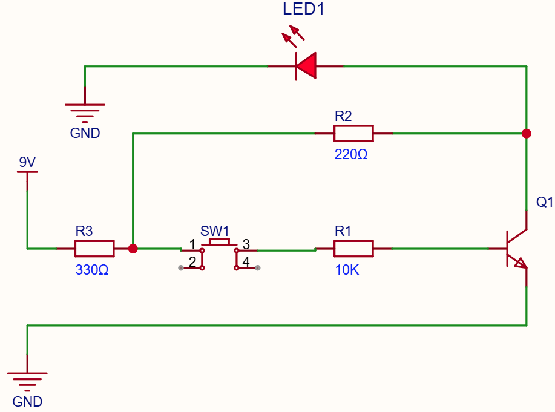

Portas lógicas com transistores: o que existe dentro de um CI
Toda porta lógica, do 74HC08 ao núcleo de um microcontrolador, é feita de transistores. Veja como montar AND, OR, NOT, NAND e NOR usando só transistores BC547, resistores e botões.

O transistor como chave
Em circuitos analógicos, o transistor costuma ser usado como amplificador. Na eletrônica digital, ele trabalha em apenas dois estados, como se fosse um interruptor:
- Corte (nível lógico 0): não há corrente na base, então o caminho entre coletor e emissor fica aberto.
- Saturação (nível lógico 1): a corrente na base é suficiente para o transistor conduzir totalmente, como uma chave fechada.
Em todos os circuitos do artigo, cada entrada é um botão que alimenta a base do transistor por um resistor de 10 kΩ. Botão solto é 0; botão pressionado é 1. A saída é indicada por um LED.
Material usado
- Transistores NPN BC547;
- Resistores de 220 Ω, 330 Ω, 4,7 kΩ e 10 kΩ;
- Botões (push-buttons) para as entradas;
- LED vermelho para a saída;
- Fonte de 9 V.
Em série é AND, em paralelo é OR
Na porta AND, dois transistores ficam em série: a corrente só chega ao LED se os dois estiverem saturados ao mesmo tempo, ou seja, com os dois botões pressionados.
Na porta OR, os transistores ficam em paralelo: basta um deles conduzir para o LED acender.

Invertendo a lógica: NOT, NAND e NOR
Para inverter o resultado, a saída deixa de ser lida no emissor e passa a ser lida no coletor. Quando o transistor satura, o coletor vai para perto de 0 V e o LED apaga; quando está em corte, o coletor fica em tensão alta e o LED acende.
Com um único transistor, isso forma a porta NOT. Aplicando a mesma ideia aos circuitos em série e em paralelo, obtemos a NAND e a NOR.

Resumo das cinco portas
| Porta | Transistores | Saída lida no | LED acende quando |
|---|---|---|---|
| AND | 2 em série | Emissor | Os dois botões estão pressionados |
| OR | 2 em paralelo | Emissor | Pelo menos um botão está pressionado |
| NOT | 1 | Coletor | O botão está solto |
| NAND | 2 em série | Coletor | Pelo menos um botão está solto |
| NOR | 2 em paralelo | Coletor | Nenhum botão está pressionado |
Por que isso ainda importa
Em projetos reais, usamos circuitos integrados, porque eles colocam milhares de portas num espaço minúsculo. Mesmo assim, montar uma porta com componentes discretos ajuda a entender o que acontece dentro de um processador. E a lógica com transistores avulsos continua útil em drivers de potência, circuitos de intertravamento e condicionamento de sinais.